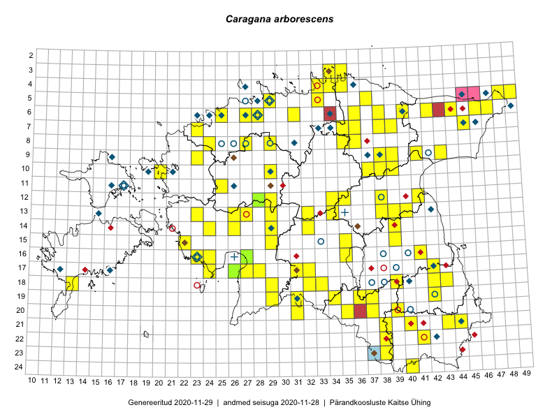

Caragana arborescens
Uuendatud: 2016-12-08
Kaardile koondatud taksonid: Caragana arborescens Lam.

Kaart põhineb 158 vaatlusel. Taime on leitud 88 ruudust.
| Ruut | Vaatleja(d) | Vaatlusaeg | Kirje tüüp | Viide andmebaasikirjele |
|---|---|---|---|---|
| 19-29 | Peedu Saar, Liina Oja | 2015-05-22 | ruut/ala | vaata PlutoFis |
| 19-29 | Peedu Saar, Liina Oja | 2015-05-22 | punkt | vaata PlutoFis |
| 16-23 | Peedu Saar, Liina Oja | 2015-05-15 | ruut/ala | vaata PlutoFis |
| 16-23 | Peedu Saar, Liina Oja | 2015-05-21 | punkt | vaata PlutoFis |
| 13-26 | Toomas Kukk, Thea Kull, Timo Luhamäe, Ott Luuk, Peedu Saar | 2015-06-28 | ruut/ala | vaata PlutoFis |
| 13-26 | Toomas Kukk, Thea Kull, Timo Luhamäe, Ott Luuk, Peedu Saar | 2015-06-28 | punkt | vaata PlutoFis |
| 13-27 | Toomas Kukk, Indrek Tammekänd | 2015-05-09 | ruut/ala | vaata PlutoFis |
| 13-27 | Toomas Kukk, Indrek Tammekänd | 2015-05-09 | punkt | vaata PlutoFis |
| 12-29 | Tiit Hallikma, Indrek Tammekänd, Toomas Kukk | 2015-06-09 | ruut/ala | vaata PlutoFis |
| 12-29 | Tiit Hallikma, Indrek Tammekänd, Toomas Kukk | 2015-06-09 | punkt | vaata PlutoFis |
| 06-42 | Peedu Saar, S. Laherand | 2015-05-30 | punkt | vaata PlutoFis |
| 12-34 | Toomas Kukk, Indrek Tammekänd | 2015-05-10 | ruut/ala | vaata PlutoFis |
| 13-34 | Toomas Kukk, Indrek Tammekänd | 2015-05-10 | ruut/ala | vaata PlutoFis |
| 12-34 | Toomas Kukk, Indrek Tammekänd | 2015-05-10 | punkt | vaata PlutoFis |
| 13-34 | Toomas Kukk, Indrek Tammekänd | 2015-05-10 | punkt | vaata PlutoFis |
| 09-41 | Toomas Kukk, Raivo Kalle | 2015-05-14 | ruut/ala | vaata PlutoFis |
| 09-41 | Toomas Kukk, Raivo Kalle | 2015-05-14 | punkt | vaata PlutoFis |
| 17-27 | Peedu Saar, Liina Oja | 2015-06-09 | punkt | vaata PlutoFis |
| 17-28 | Peedu Saar, Liina Oja | 2015-06-09 | punkt | vaata PlutoFis |
| 15-39 | Peedu Saar | 2015-07-15 | punkt | vaata PlutoFis |
| 16-41 | Peedu Saar, Eerik Leibak | 2015-07-30 | punkt | vaata PlutoFis |
| 09-38 | Toomas Kukk, Raivo Kalle | 2015-05-11 | ruut/ala | vaata PlutoFis |
| 15-39 | Peedu Saar | 2015-07-15 | ruut/ala | vaata PlutoFis |
| 09-38 | Toomas Kukk, Raivo Kalle | 2015-05-11 | punkt | vaata PlutoFis |
| 05-49 | Tiit Hallikma, Toomas Kukk | 2015-07-22 | ruut/ala | vaata PlutoFis |
| 05-49 | Tiit Hallikma, Toomas Kukk | 2015-07-22 | punkt | vaata PlutoFis |
| 16-41 | Peedu Saar, Eerik Leibak | 2015-07-30 | ruut/ala | vaata PlutoFis |
| 05-48 | Toomas Kukk, Eerik Leibak | 2015-04-26 | ruut/ala | vaata PlutoFis |
| 05-48 | Toomas Kukk, Eerik Leibak | 2015-04-26 | punkt | vaata PlutoFis |
| 17-27 | Peedu Saar, Liina Oja | 2015-06-09 | ruut/ala | vaata PlutoFis |
| 17-28 | Peedu Saar, Liina Oja | 2015-06-09 | ruut/ala | vaata PlutoFis |
| 06-42 | Peedu Saar, Sander Laherand | 2015-05-30 | ruut/ala | vaata PlutoFis |
| ? | Malle Leht | 2015-07-28 | ruut/ala | vaata PlutoFis |
| 12-35 | Toomas Kukk, Tiit Hallikma | 2015-06-12 | ruut/ala | vaata PlutoFis |
| 07-45 | Toomas Kukk, Tiit Hallikma | 2015-06-01 | ruut/ala | vaata PlutoFis |
| 13-40 | Peedu Saar | 2015-08-10 | punkt | vaata PlutoFis |
| 13-40 | Peedu Saar | 2015-08-10 | ruut/ala | vaata PlutoFis |
| 10-29 | Tiit Hallikma, Toomas Kukk | 2015-06-11 | punkt | vaata PlutoFis |
| 12-35 | Tiit Hallikma, Toomas Kukk | 2015-06-12 | punkt | vaata PlutoFis |
| 03-34 | Rein Kalamees, Kersti Püssa | 2015-06-02 | ruut/ala | vaata PlutoFis |
| 04-34 | Rein Kalamees, Kersti Püssa | 2015-06-02 | ruut/ala | vaata PlutoFis |
| 07-45 | Tiit Hallikma, Toomas Kukk | 2015-06-01 | punkt | vaata PlutoFis |
| 05-37 | Rein Kalamees, Kersti Püssa | 2015-08-15 | ruut/ala | vaata PlutoFis |
| 07-45 | Ott Luuk, Hannes Pehlak | 2015-07-22 | ruut/ala | vaata PlutoFis |
| 14-29 | Ott Luuk, Hannes Pehlak | 2015-06-10 | ruut/ala | vaata PlutoFis |
| 19-31 | Ott Luuk, Indrek Tammekänd | 2015-05-22 | ruut/ala | vaata PlutoFis |
| 08-35 | Jana-Maria Habicht, Ester Valdvee, Kirke Pilvik | 2015-07-14 | ruut/ala | vaata PlutoFis |
| 14-24 | Indrek Tammekänd | 2015-05-23 | punkt | vaata PlutoFis |
| 13-40 | Eeva-Maria Jeletsky, Tarmo Niitla | 2015-04-26 | ruut/ala | vaata PlutoFis |
| 13-40 | Eeva-Maria Jeletsky, Tarmo Niitla | 2015-04-26 | punkt | vaata PlutoFis |
| 17-24 | Ott Luuk, Eerik Leibak | 2015-05-21 | ruut/ala | vaata PlutoFis |
| 15-22 | Vilma Kuusk, Indrek Tammekänd | 2015-06-30 | punkt | vaata PlutoFis |
| 14-39 | Eeva-Maria Jeletsky, Tarmo Niitla | 2015-05-03 | punkt | vaata PlutoFis |
| 14-39 | Eeva-Maria Jeletsky, Tarmo Niitla | 2015-05-03 | ruut/ala | vaata PlutoFis |
| 17-24 | Ott Luuk, Eerik Leibak | 2015-05-21 | punkt | vaata PlutoFis |
| 23-38 | Eeva-Maria Jeletsky, Tarmo Niitla | 2015-07-15 | punkt | vaata PlutoFis |
| 23-38 | Eeva-Maria Jeletsky, Tarmo Niitla | 2015-07-15 | ruut/ala | vaata PlutoFis |
| 18-43 | Maret Gerz, Jaak-Albert Metsoja | 2015-05-20 | punkt | vaata PlutoFis |
| 16-24 | Maret Gerz, Leena Gerz | 2015-08-09 | ruut/ala | vaata PlutoFis |
| 16-24 | Maret Gerz, Leena Gerz | 2015-08-09 | punkt | vaata PlutoFis |
| 08-35 | Jana-Maria Habicht, Ester Valdvee | 2015-07-15 | punkt | vaata PlutoFis |
| 19-37 | Eeva-Maria Jeletsky, Tarmo Niitla | 2015-08-10 | punkt | vaata PlutoFis |
| 20-37 | Eeva-Maria Jeletsky, Tarmo Niitla | 2015-08-11 | punkt | vaata PlutoFis |
| 19-37 | Eeva-Maria Jeletsky, Tarmo Niitla | 2015-08-10 | ruut/ala | vaata PlutoFis |
| 20-37 | Eeva-Maria Jeletsky, Tarmo Niitla | 2015-08-11 | ruut/ala | vaata PlutoFis |
| 18-33 | Maria Abakumova, Helle Mäemets | 2015-05-25 | ruut/ala | vaata PlutoFis |
| 18-32 | Maria Abakumova, Helle Mäemets | 2015-05-25 | ruut/ala | vaata PlutoFis |
| 13-23 | Kirsi Loide, Marje Loide | 2015-08-18 | ruut/ala | vaata PlutoFis |
| 14-29 | Liina Oja, Ott Luuk | 2015-05-10 | punkt | vaata PlutoFis |
| 17-42 | Kirsi Loide, Marje Loide | 2015-07-27 | ruut/ala | vaata PlutoFis |
| 18-42 | Kirsi Loide, Marje Loide | 2015-07-28 | ruut/ala | vaata PlutoFis |
| 19-42 | Kirsi Loide, Marje Loide | 2015-07-29 | ruut/ala | vaata PlutoFis |
| 18-32 | Maria Abakumova, Helle Mäemets | 2015-05-25 | punkt | vaata PlutoFis |
| 18-33 | Maria Abakumova, Helle Mäemets | 2015-05-25 | punkt | vaata PlutoFis |
| 06-44 | Timo Luhamäe, Eerik Leibak | 2015-05-30 | ruut/ala | vaata PlutoFis |
| 06-47 | Timo Luhamäe, Eerik Leibak | 2015-06-01 | ruut/ala | vaata PlutoFis |
| 09-39 | Elle Rajandu | 2015-08-14 | punkt | vaata PlutoFis |
| 10-37 | Karin Kikas, Elle Rajandu | 2015-06-01 | ruut/ala | vaata PlutoFis |
| 10-37 | Elle Rajandu | 2015-07-13 | punkt | vaata PlutoFis |
| 06-40 | Mari Metsoja, Jaak-Albert Metsoja | 2015-07-24 | ruut/ala | vaata PlutoFis |
| 06-42 | Mari Metsoja, Jaak-Albert Metsoja | 2015-07-21 | ruut/ala | vaata PlutoFis |
| 07-23 | Mari Metsoja, Jaak-Albert Metsoja | 2015-05-16 | ruut/ala | vaata PlutoFis |
| 06-42 | Eerik Leibak, Jaanus Paal, Uudo Timm | 2015-07-08 | ruut/ala | vaata PlutoFis |
| 06-42 | Eerik Leibak, Jaanus Paal, Uudo Timm | 2015-07-08 | punkt | vaata PlutoFis |
| 06-44 | Timo Luhamäe, Eerik Leibak | 2015-05-30 | punkt | vaata PlutoFis |
| 06-47 | Timo Luhamäe, Eerik Leibak | 2015-06-01 | punkt | vaata PlutoFis |
| 17-26 | Meeli Mesipuu | 2015-05-21 | punkt | vaata PlutoFis |
| 06-38 | Kaili Orav, Silvia Pihu | 2015-07-20 | ruut/ala | vaata PlutoFis |
| 19-31 | Ott Luuk, Indrek Tammekänd | 2015-05-22 | punkt | vaata PlutoFis |
| 20-31 | Ott Luuk, Indrek Tammekänd | 2015-05-22 | punkt | vaata PlutoFis |
| 12-35 | Ott Luuk, Liina Oja | 2015-05-11 | punkt | vaata PlutoFis |
| 06-38 | Kaili Orav, Silvia Pihu | 2015-07-20 | punkt | vaata PlutoFis |
| 21-40 | Kaili Kattai | 2015-05-31 | ruut/ala | vaata PlutoFis |
| 05-29 | Peedu Saar, Sander Laherand | 2013-07-07 | ruut/ala | vaata PlutoFis |
| 10-20 | Tõnu Ploompuu | 2015-05-02 | ruut/ala | vaata PlutoFis |
| 13-39 | Kai Rünk, Ülle Jõgar, Illi Tarmu | 2016-06-08T06:00Z | ruut/ala | vaata PlutoFis |
| 13-39 | Kai Rünk, Ülle Jõgar, Illi Tarmu | 2016-06-08T06:00Z | punkt | vaata PlutoFis |
| 16-27 | Indrek Tammekänd | 2016-06-01 | punkt | vaata PlutoFis |
| 21-44 | Toomas Kukk, Tiit Hallikma, Johannes Kõdar | 2016-06-14 | ruut/ala | vaata PlutoFis |
| 22-41 | Toomas Kukk, Tiit Hallikma | 2016-06-16 | ruut/ala | vaata PlutoFis |
| 22-38 | Rein Kalamees, Eerik Leibak | 2016-06-16 | punkt | vaata PlutoFis |
| 22-38 | Rein Kalamees, Eerik Leibak | 2016-06-16 | ruut/ala | vaata PlutoFis |
| 19-34 | Silvia Pihu, Illi Tarmu | 2015-07-11 | punkt | vaata PlutoFis |
| 19-36 | Peedu Saar, Tarmo Niitla | 2016-06-14 | ruut/ala | vaata PlutoFis |
| 24-40 | Sander Laherand, Ott Luuk, Susanna Vain | 2016-06-14 | punkt | vaata PlutoFis |
| 06-28 | Toomas Kukk | 2016-07-04 | ruut/ala | vaata PlutoFis |
| 06-28 | Toomas Kukk | 2016-07-04 | punkt | vaata PlutoFis |
| 14-26 | Liina Oja, Maret Gerz | 2016-07-08 | punkt | vaata PlutoFis |
| 20-35 | Thea Kull, Eerik Leibak | 2016-07-18 | punkt | vaata PlutoFis |
| 13-38 | Eeva-Maria Jeletsky, Tarmo Niitla | 2016-07-23 | punkt | vaata PlutoFis |
| 13-38 | Eeva-Maria Jeletsky, Tarmo Niitla | 2016-07-23 | ruut/ala | vaata PlutoFis |
| 20-35 | Thea Kull, Eerik Leibak | 2016-07-18 | ruut/ala | vaata PlutoFis |
| 17-32 | Toomas Kukk, Eerik Leibak | 2016-07-20 | ruut/ala | vaata PlutoFis |
| 17-32 | Toomas Kukk, Eerik Leibak | 2016-07-20 | punkt | vaata PlutoFis |
| 17-32 | Toomas Kukk, Eerik Leibak | 2016-07-20 | punkt | vaata PlutoFis |
| 14-32 | Toomas Kukk, Liina Oja | 2016-07-21 | ruut/ala | vaata PlutoFis |
| 07-38 | Liina Oja, Eerik Leibak | 2016-07-28 | ruut/ala | vaata PlutoFis |
| 07-35 | Sander Laherand, Toomas Kukk, Nele Jõessar | 2016-07-27 | punkt | vaata PlutoFis |
| 06-25 | Sander Laherand, Nele Jõessar | 2016-08-01 | punkt | vaata PlutoFis |
| 21-43 | Thea Kull, Peedu Saar | 2016-08-05 | ruut/ala | vaata PlutoFis |
| 10-39 | Ott Luuk, Eerik Leibak | 2016-08-03 | ruut/ala | vaata PlutoFis |
| 10-39 | Ott Luuk, Eerik Leibak | 2016-08-03 | punkt | vaata PlutoFis |
| 13-32 | Thea Kull, Raivo Kalle, Susanna Vain | 2016-07-21 | ruut/ala | vaata PlutoFis |
| 19-36 | Tarmo Niitla, Peedu Saar | 2016-06-14 | punkt | vaata PlutoFis |
| 13-32 | Susanna Vain, Thea Kull, Raivo Kalle | 2016-07-21 | punkt | vaata PlutoFis |
| 08-29 | Sander Laherand, Rein Kalamees | 2016-07-08 | ruut/ala | vaata PlutoFis |
| 07-39 | Liina Oja, Meeli Mesipuu | 2016-07-29 | punkt | vaata PlutoFis |
| 07-38 | Liina Oja, Eerik Leibak | 2016-07-28 | punkt | vaata PlutoFis |
| 21-43 | Peedu Saar, Thea Kull | 2016-08-05 | punkt | vaata PlutoFis |
| 06-36 | Liina Oja, Peedu Saar, Susanna Vain | 2016-07-27 | punkt | vaata PlutoFis |
| 04-35 | Sander Laherand, Ott Luuk, Nele Jõessar | 2016-07-26 | ruut/ala | vaata PlutoFis |
| 03-35 | Sander Laherand, Ott Luuk, Nele Jõessar | 2016-07-26 | punkt | vaata PlutoFis |
| 08-36 | Karin Kikas, Elle Rajandu | 2016-06-27 | ruut/ala | vaata PlutoFis |
| 08-36 | Karin Kikas, Elle Rajandu | 2016-06-27 | punkt | vaata PlutoFis |
| 15-35 | Liina Oja, Elle Rajandu, Susanna Vain | 2016-07-22 | punkt | vaata PlutoFis |
| 14-32 | Liina Oja, Toomas Kukk | 2016-07-21 | punkt | vaata PlutoFis |
| 07-35 | Toomas Kukk, Sander Laherand, Nele Jõessar | 2016-07-27 | ruut/ala | vaata PlutoFis |
| 19-36 | Sander Laherand | 2016-09-20 | punkt | vaata PlutoFis |
| 19-31 | Meeli Mesipuu, Mari Metsoja | 2016-07-19 | ruut/ala | vaata PlutoFis |
| 21-44 | Tiit Hallikma, Toomas Kukk, Johannes Kõdar | 2016-06-14 | punkt | vaata PlutoFis |
| 22-41 | Tiit Hallikma, Toomas Kukk, Johannes Kõdar | 2016-06-16 | punkt | vaata PlutoFis |
| 12-38 | Ulvi Selgis | 2016-09-18 | ruut/ala | vaata PlutoFis |
| 05-33 | Ott Luuk, Hannes Pehlak | 2016-07-27 | ruut/ala | vaata PlutoFis |
| 07-39 | Meeli Mesipuu, Liina Oja | 2016-07-29 | ruut/ala | vaata PlutoFis |
| 06-46 | Kadi-Liis Kesler, Tiina Elvisto | 2015-07-30 | ruut/ala | vaata PlutoFis |
| 19-31 | Meeli Mesipuu, Mari Metsoja | 2016-07-19 | punkt | vaata PlutoFis |
| 24-40 | Ott Luuk, Sander Laherand, Susanna Vain | 2016-06-14 | ruut/ala | vaata PlutoFis |
| 03-35 | Ott Luuk, Sander Laherand, Nele Jõessar | 2016-07-26 | ruut/ala | vaata PlutoFis |
| 21-38 | Jaak-Albert Metsoja, Mari Metsoja | 2016-06-17 | ruut/ala | vaata PlutoFis |
| 08-24 | Jaak-Albert Metsoja, Mari Metsoja | 2016-07-08 | ruut/ala | vaata PlutoFis |
| 09-23 | Jaak-Albert Metsoja, Mari Metsoja | 2016-07-06 | ruut/ala | vaata PlutoFis |
| 09-43 | Hannes Pehlak, Ott Luuk | 2016-07-29 | ruut/ala | vaata PlutoFis |
| 09-23 | Jaak-Albert Metsoja, Mari Metsoja | 2016-07-06 | punkt | vaata PlutoFis |
| 08-24 | Jaak-Albert Metsoja, Mari Metsoja | 2016-07-08 | punkt | vaata PlutoFis |
| 16-35 | Jaak-Albert Metsoja, Lena Neuenkamp, Sirje Azarov | 2016-07-18 | punkt | vaata PlutoFis |
| 16-35 | Jaak-Albert Metsoja, Lena Neuenkamp, Sirje Azarov | 2016-07-20 | ruut/ala | vaata PlutoFis |
| 19-31 | Mari Metsoja, Meeli Mesipuu | 2016-07-19 | punkt | vaata PlutoFis |
| 08-29 | Rein Kalamees, Sander Laherand | 2016-07-08 | punkt | vaata PlutoFis |